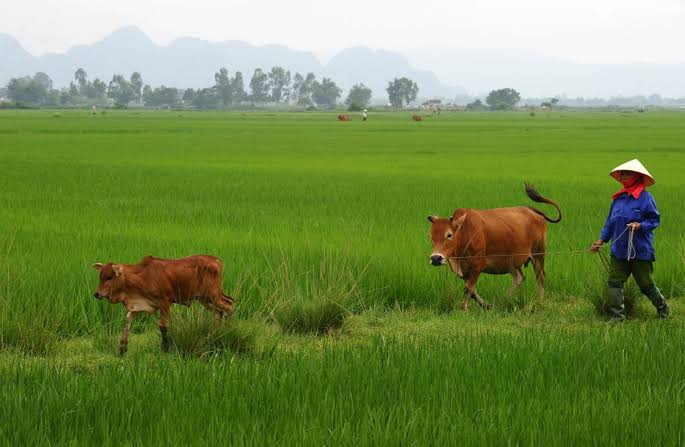
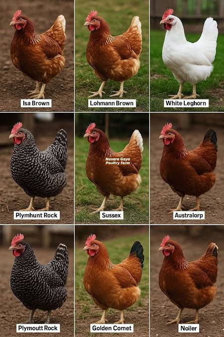
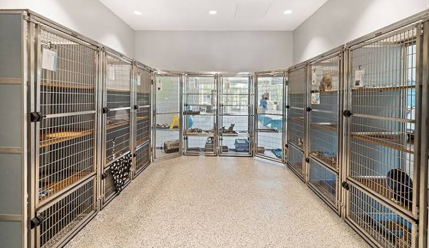
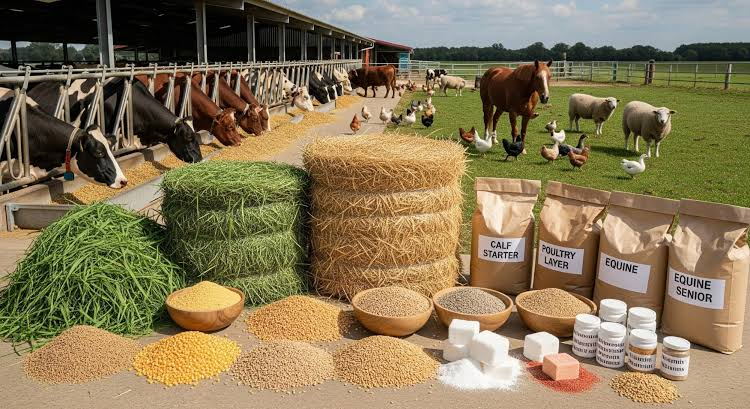
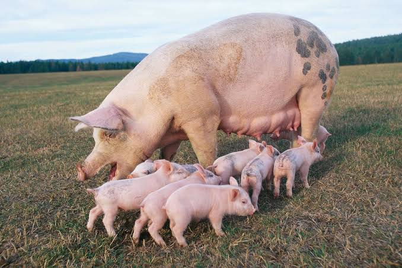
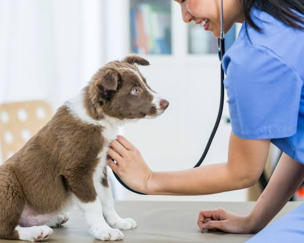
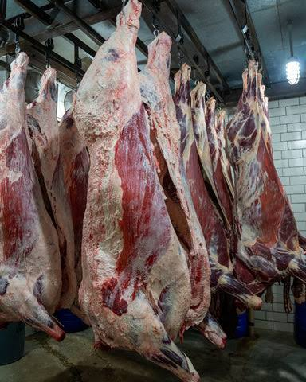

Animal husbandry is important because it provides food, income, raw materials, and employment while helping communities improve their standard of living.
Animal husbandry is the branch of agriculture concerned with the care, breeding, feeding, management, and efficient use of farm animals. It includes livestock such as cattle, sheep, goats, pigs, poultry, rabbits, and even fish in some systems. The main aim of animal husbandry is to produce useful products such as milk, meat, eggs, wool, hides, manure, and power, while improving the health and welfare of the animals.
Good animal husbandry combines science, skill, and care to turn livestock into reliable sources of food and income.
Animal husbandry is a practical subject because it links the biological needs of animals to the economic goals of the farmer. A well-managed herd or flock produces more efficiently, has lower mortality, and contributes more to the farm economy.
Different animal breeds are suited to different climates, purposes, and management systems. Some breeds are valued for meat production, while others are known for high milk yield, fast growth, egg production, or good mothering ability. Selecting the right breed is one of the first and most important decisions in animal husbandry.

The right breed improves productivity, adaptability, and profitability under local conditions.
Selection is based on traits such as body size, growth rate, fertility, disease resistance, feed efficiency, and product quality. Farmers also consider the climate, available feed, market demand, and the purpose of production before choosing a breed.
Animals need suitable shelter that protects them from rain, wind, sun, heat, cold, and predators. The housing system should provide enough space, good ventilation, dry floors, adequate lighting, and proper drainage. Clean and comfortable housing reduces stress and lowers the risk of disease.

A well-built pen or shed is the first protection against disease and poor performance.
In addition to shelter, the environment must support hygiene, easy waste removal, and safe access to feed and water. Good housing improves animal welfare and supports efficient production throughout the year.
Nutrition is one of the most important parts of animal husbandry. Animals need enough energy, protein, vitamins, minerals, and water for growth, reproduction, and production. Poor feeding can cause slow growth, weak immunity, poor fertility, and low product yield.

Balanced feed leads to healthy animals and better returns for the farmer.
Feeds may be roughages such as grass, hay, silage, and crop residues, or concentrates such as grains, oilseed cakes, and commercial feeds. Farmers also use supplements to provide vitamins and minerals that may be missing from the basic ration.
Reproduction is the process by which animals produce young ones and continue the herd or flock. Breeding is the controlled mating of selected animals to improve desirable traits. Animal breeders aim to improve growth rate, milk yield, fertility, disease resistance, and carcass quality.

Good breeding is the foundation of long-term improvement in animal performance.
Methods of breeding include natural mating and artificial insemination. Artificial insemination is widely used because it allows farmers to use superior male genes without keeping many males on the farm. Proper record keeping helps breeders evaluate performance and choose the best animals for mating.
Animal health is central to successful husbandry. Sick animals grow slowly, produce less, and may die if not treated early. Common disease-causing agents include bacteria, viruses, fungi, parasites, and poor management conditions. Farmers must observe animals carefully for signs of illness such as poor appetite, coughing, diarrhea, abnormal posture, or reduced milk or egg production.

Prevention is cheaper and more effective than cure when it comes to animal diseases.
Health management includes vaccination, deworming, quarantine of new animals, proper sanitation, clean water, and regular veterinary care. Good hygiene and proper housing reduce the spread of disease in the farm.
Animal husbandry produces many valuable products. These include milk, eggs, meat, wool, hides, skin, manure, and sometimes draught power. The value of animal products depends on quality, market demand, packaging, storage, and transport.

Good management increases output, but good marketing turns output into profit.
Farmers must study market prices, consumer demand, and product handling methods. Proper storage, processing, and packaging improve the quality of the products and raise the income from animal production.